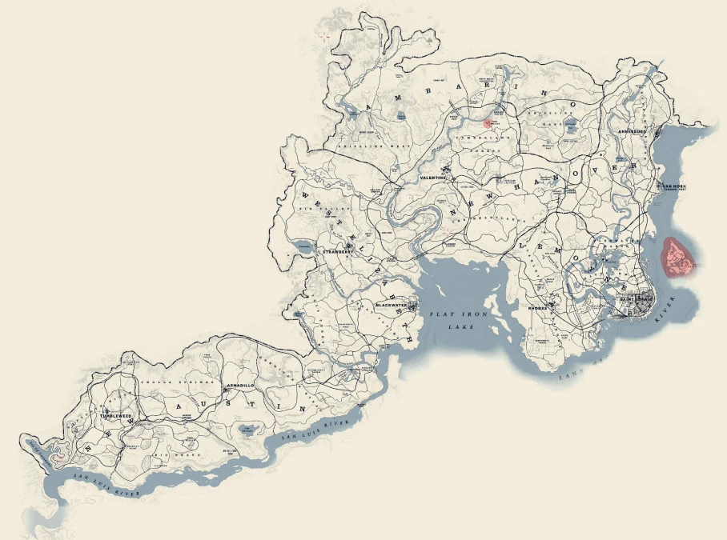
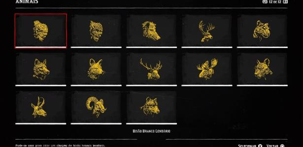

Galeria de imagens do jogo
Mapa do jogo

Tamanho aproximado do mapa: 75km²
Animais lendários

Dentro do jogo podemos caçar 16 animais considerado lendários, entre eles: Urso-cinzento Lendário Bharati, Lobo Lendário, Javali Lendário, Alce Lendário, Carneiro-selvagem Lendário, Bisão Branco Lendário, Castor Lendário, Cervo Lendário, Coiote Lendário, Uapiti Lendário, Raposa Lendária, . Jacaré Gigante Lendário, Bisão Lendário Tatanka, Antilocapra Lendária, Suçuarana Lendária, Pantera Lendária Giaguaro.